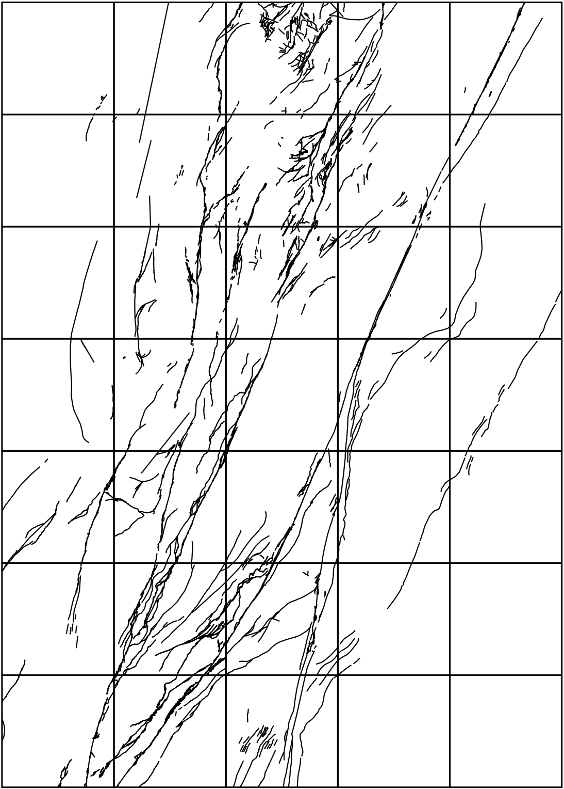
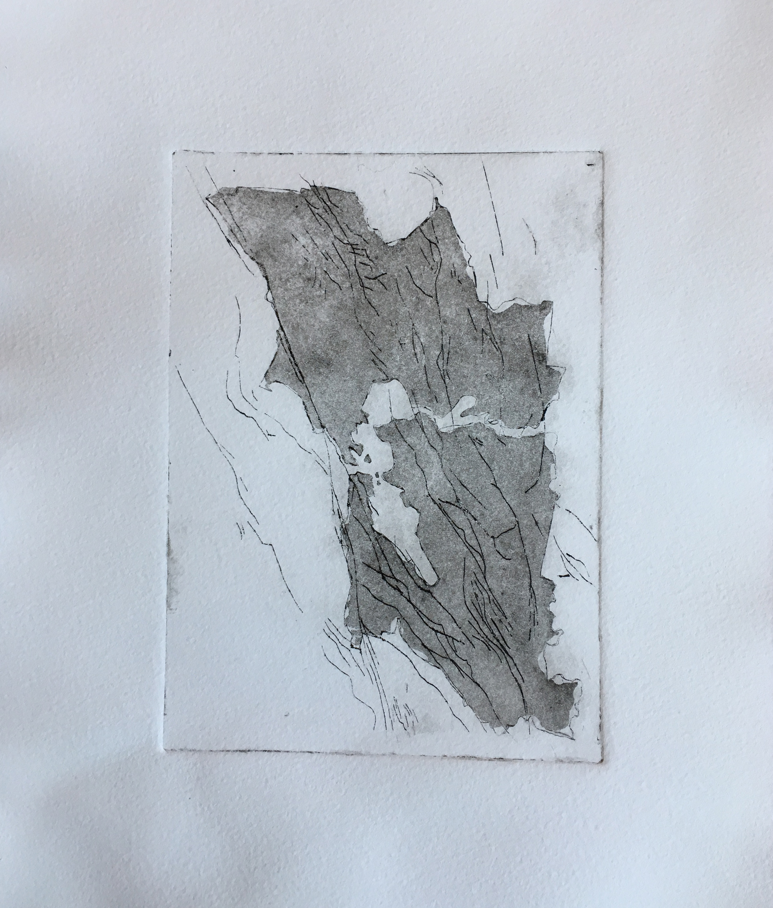

Beneath the Surface:
Mapping with Intaglio
Jake Coolidge | 19 October 2018
before cartography
undergraduate work in fine art printmaking
more recently
hand-drawn maps
transition to intaglio
Mount Rainier
Bay Area Fault Lines
a recent experiment in map symbolization


concluding thoughts
Thank you!
jakecoolidge@gmail.com
twitter: @jccartography